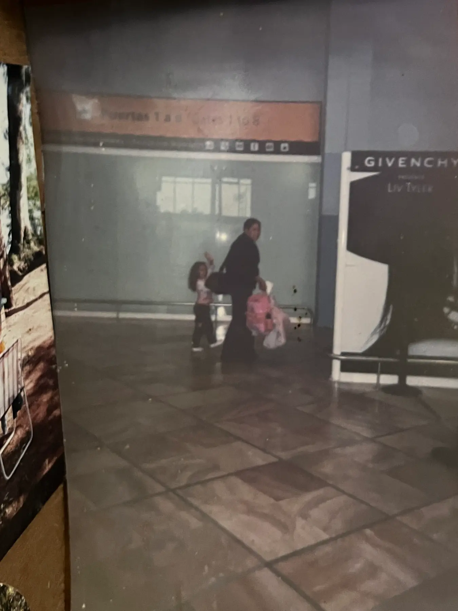
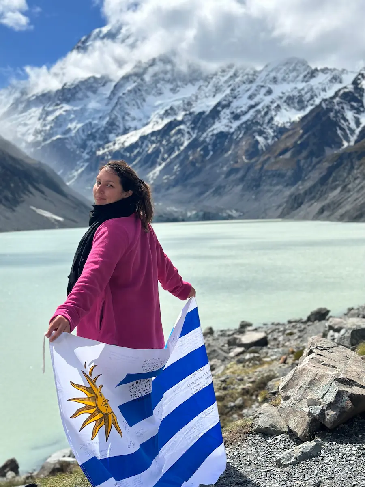
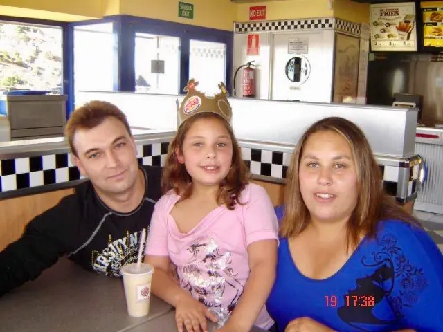

EL MUNDO ES MUY GRANDE PARA QUEDARSE EN UN SOLO LUGAR✨

A los 4 años me mudé con mis padres a España, donde viví 4 años. Ese primer cambio me hizo
ver que el mundo era mucho más grande!😊
A los 22 años, decidí viajar sola y comencé con una Working Holiday en Nueva Zelanda🇳🇿,
donde trabajé, mejoré mi inglés y aprendí a adaptarme.
Ahora vivo en Escocia, explorando nuevas oportunidades y aprendiendo programación,
preparándome para lo que viene: más países, más idiomas y más crecimiento!.


Desde chica siempre tuve claro que el mundo era enorme y que quería salir a explorarlo. Pero más allá de mi curiosidad
por viajar, creo que en parte siempre tuve esa mentalidad porque crecí viendo la historia de mis padres.
Siempre admiré a mi padre por haberse ido tan joven a otro país sin nada, en una época sin teléfonos, sin Google Maps,
sin saber bien qué esperar. Se la jugó solo, buscando una vida mejor y una experiencia distinta.
Trabajó todo lo que hizo falta para que estuviéramos bien,
y siempre me quedó claro que su esfuerzo es lo que nos dio tantas oportunidades.
También admiro a mi mamá, porque a los 20 años se fue con una niña de 4 años (yo), a un país lejano, sin teléfono y sin su familia cerca.
Y ella es súper familiera, así que sé que no fue fácil. Pero se la bancó, se adaptó y lo hizo funcionar.
Crecí con esas historias y creo que, sin darme cuenta, me inspiraron a hacer lo mismo: a no conformarme, a salir de mi zona de confort y a
buscar mi propio camino.
Mi primer gran salto fue cuando me fui a Nueva Zelanda con una Working Holiday. Ahí aprendí a adaptarme a cualquier cosa,
trabajé en todo tipo de trabajos y aprendí inglés.
Ahora estoy en Escocia, en otra etapa de mi vida, aprendiendo programación y preparándome para
lo que viene.
Si hay algo que tengo claro es que el mundo es demasiado grande para quedarse en un solo lugar, y que si quiero algo, tengo que ir a buscarlo.